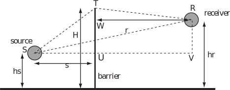

2 Engineering Example 1
2.1 Noise reduction by sound barriers
Introduction
Audible sound has much longer wavelengths than light. Consequently, sound travelling in the atmosphere is able to bend around obstacles even when these obstacles cause sharp shadows for light. This is the result of the wave phenomenon known as diffraction . It can be observed also with water waves at the ends of breakwaters. The extent to which waves bend around obstacles depends upon the wavelength and the source-receiver geometry. So the efficacy of purpose built noise barriers, such as to be found alongside motorways in urban and suburban areas, depends on the frequencies in the sound and the locations of the source and receiver (nearest noise-affected person or dwelling) relative to the barrier. Specifically, the barrier performance depends on the difference in the lengths of the hypothetical ray paths passing from source to receiver either directly or via the top of the barrier (see Figure 7).
Figure 7

Problem in words
Find the difference in the path lengths from source to receiver either directly or via the top of the barrier in terms of
(i) the source and receiver heights,
(ii) the horizontal distances from source and receiver to the barrier and
(iii) the height of the barrier.
Calculate the path length difference for a 1 m high source, 3 m from a 3 m high barrier when the receiver is 30 m on the other side of the barrier and at a height of 1 m.
Mathematical statement of the problem
Find in terms of and .
Calculate this quantity for and Mathematical analysis
Note the labels on points that are useful for the analysis. Note that the length of and that the horizontal separation between and is In the right-angled triangle Pythagoras’ theorem gives
So
Note that the length of and the length of In the right-angled triangle
In the right-angled triangle TWR,
So
So using (3) and (4)
For and
So the path length difference is 0.672 m.
Interpretation
Note that, for equal source and receiver heights, the further either receiver or source is from the barrier, the smaller the path length difference. Moreover if source and receiver are at the same height as the barrier, the path length difference is zero. In fact diffraction by the barrier still gives some sound reduction for this case. The smaller the path length difference, the more accurately it has to be calculated as part of predicting the barrierÕs noise reduction.